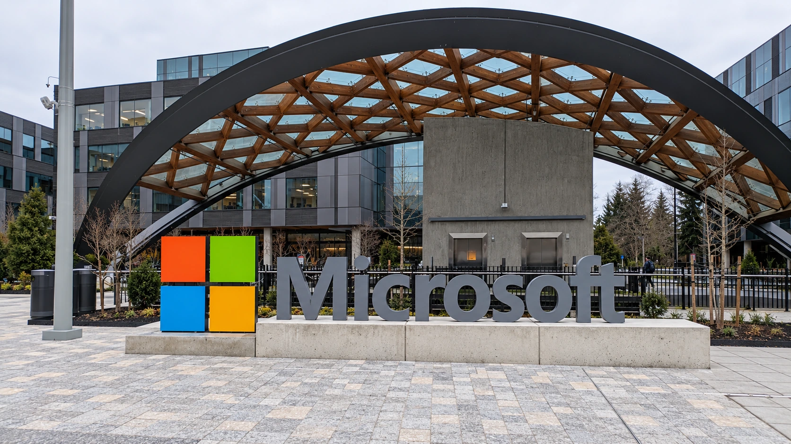

Microsoft opens code for teams of up to 1,024 AI agents, with costs and reliability still in question
Microsoft’s Agensh release lets researchers test self-organizing AI coding teams. Higher benchmark scores still leave a demanding economic test.

Microsoft released the code for Agensh on October 24, giving outside researchers a way to test an unusual approach to AI software development: large groups of coding agents that divide work among themselves instead of relying on a single supervising agent. The release includes the coordination software, experiment launch scripts and a guide to reproducing the tests.
The opening is significant because it makes the system inspectable and testable beyond a research paper. It does not mean Microsoft has launched a new commercial coding service, or demonstrated that a thousand AI agents can replace a thousand software engineers. The company’s own results describe a narrower experiment with substantial work still left unsolved.
Agensh’s research paper appeared on September 22. The new event is the October code release, not a newly published discovery of its headline benchmark results. That distinction matters in an AI market where a fresh distribution date can make older research look like a new performance breakthrough.
A team without one agent assigning every task
In the researchers’ design, workers consult shared information, claim tasks, exchange findings, verify their contributions and merge changes into a common workspace. Each worker can then choose further work. This reduces dependence on one central coordinator that must keep track of every assignment and integrate every result.
The infrastructure uses Gitea for shared code work and Mattermost for communication. These are practical coordination tools, rather than evidence that the agents have acquired independent business judgment. The purpose is to let multiple streams of software work proceed together while preserving enough shared context to make their contributions useful.
That addresses a real operational difficulty. Splitting work creates opportunities for parallel progress, but also for duplicated effort, incompatible changes and mistakes that spread between workers. The commercial question is whether better coordination produces enough verified output to cover those additional costs, the same issue behind evaluating an AI agent’s return on investment.
Better scores still leave many tests failing
The original study used five difficult ProgramBench tasks, in which agents reconstructed software behavior during a six-hour run without internet access. Across those tasks, the reported average test-pass rate rose from 19.31% with one agent to 28.78% with 128. That is a gain of 9.47 percentage points, or about 49% relative to the lower starting score.
The relative increase sounds large because the baseline is low. A 28.78% pass rate still leaves more than seven in ten tests unsatisfied. The result is evidence of improvement within the selected experiment, rather than broad proof of production-ready reliability.
The 1,024-agent result concerns Pandoc, a document-conversion task. The paper reports 55.06% of tests passing, compared with 50.94% for 128 agents. Eight times as many workers added 4.12 percentage points in that comparison. It would be incorrect to present the largest team’s result as an average across all five tasks.
The current repository separately reports a newer-model Pandoc experiment, with a 79.59% score from 32 agents versus 56.19% from one. That comparison should remain separate from the older-model experiments: both the model and the team configuration affect the outcome.
The release makes independent scrutiny more practical
Microsoft’s reproduction guide describes a Linux and Docker setup, a standalone baseline and the configuration needed to evaluate submissions. It also distinguishes the released setup from the paper’s experiments. Publishing that machinery gives other teams a route to investigate the claims; TTN has not independently reproduced the benchmarks.
For a business buyer, elapsed time is only one part of the bill. More simultaneous workers can mean more model calls, infrastructure and integration work. A useful comparison measures the cost per successfully completed task, including human review, rather than celebrating agent count as an outcome in itself.
Security boundaries also remain necessary when software workers share code, messages and access to tools. The controls governing enterprise AI data and permissions do not disappear when coordination becomes decentralized. Agensh’s immediate contribution is to open an experimental design for inspection. Whether it becomes economical depends on how reliably that design turns concurrent activity into work customers can actually use.
Sources and methodology
Sources checked October 25, 2026. Reported findings and company or regulatory statements are attributed in the text; discussion of financial implications is editorial analysis. The generated cover is illustrative.